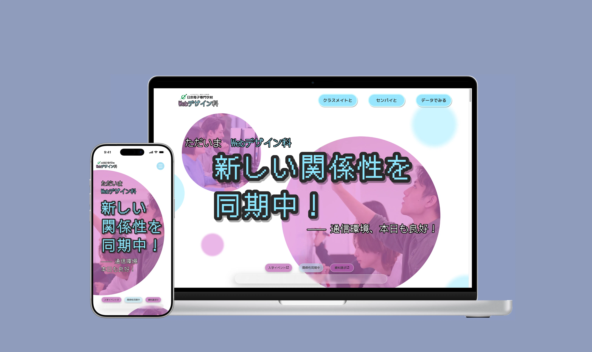

日本電子専門学校 Webデザイン科
学校生活スペシャルサイト
2025年・夏
Webデザイン科に入学して最初に取り組んだ大型課題として、日本電子専門学校 Webデザイン科への入学を検討している方をターゲットに、学科の詳細な情報や日常のキャンパスライフを紹介するWebサイトを制作しました。 本企画では、留学生である自身の視点を活かし、日本電子専門学校 Webデザイン科が「学生同士のつながり」を大切にし、その関係性を育むために行っているさまざまな取り組みに着目しました。

第一部では、同じクラスの学生同士の関係性を深める取り組みを紹介しています。 Webデザイン科では、前期授業の一環として「JEC WEEK」を実施しており、入学前の新入生同士が自然に打ち解けられるようなアイスブレイクの場が設けられています。これにより、新入生が短期間でお互いを理解し合える環境が整えられています。 また、日本電子専門学校最大規模の年間行事であるスポーツフェスティバル（スポフェス）も大きな役割を果たしています。クラス単位で参加するこのイベントを通じて、運動を楽しみながらチーム意識が高まり、学生同士の距離が自然と縮まっていく様子を伝えています。


第二部では、Webデザイン科1年生と2年生の先輩・後輩関係に焦点を当てました。 学年を越えたつながりを目的として、課外活動型の授業やイベントが定期的に開催されています。これらの活動を通して、後輩が先輩から実践的なアドバイスを受けられる環境が形成されています。 さらに、Webデザイン科独自のクラスチーム制度にも注目しました。クラスは4つのチームに分かれ、それぞれが定期的に活動を行い、1年生をサポートしています。たとえば、セミナーチームによるメール講座など、実践的で学習を支える取り組みが行われています。

第三部では、日本のWebサイトでよく用いられる「データで見る」という表現手法を取り入れ、留学生が特に関心を持ちやすく、また不安を感じやすいポイントにフォーカスしました。 感覚的な説明だけでなく、数値やデータを用いて可視化することで、日本電子専門学校 Webデザイン科の強みや魅力を、直感的かつ分かりやすく伝える構成としています。

今回のコンセプトは「関係性を同期中」です。 IT分野で使われる「同期」という概念をモチーフに、学生同士の関係性が少しずつ深まっていく様子を表現しました。サイト下部には「同期進度バー」を設置し、ページを閲覧するごとに進捗が蓄積されていく仕組みを採用。これは、学生たちのつながりが時間とともに育っていくことを象徴しています。
デザイン面では、学科公式サイトで使用されている紫と青をメインカラーに採用し、統一感を重視しました。アクセントにはデジタル感の強いフォントを使用し、IT分野らしさを強調しています。 また、ボタンやタグには近年のトレンドである大きめの角丸や透過表現を取り入れ、フラットデザインと擬物的な立体表現を組み合わせました。重要な情報にはボリューム感のある演出を施し、視覚的なメリハリをつけています。さらに、多数のアニメーションを加えることで、Webサイト全体に若々しく活気のある印象を与えることを意識しました。


課題の最終発表後には、夏休みの期間を活用し、PC・タブレット・スマートフォンといった各デバイスに対応したレスポンシブデザインの調整を行いました。画面サイズが異なっても、レイアウトや操作性が損なわれないよう、表示や動作の最適化を意識して実装しています。


サイトをアクセス：